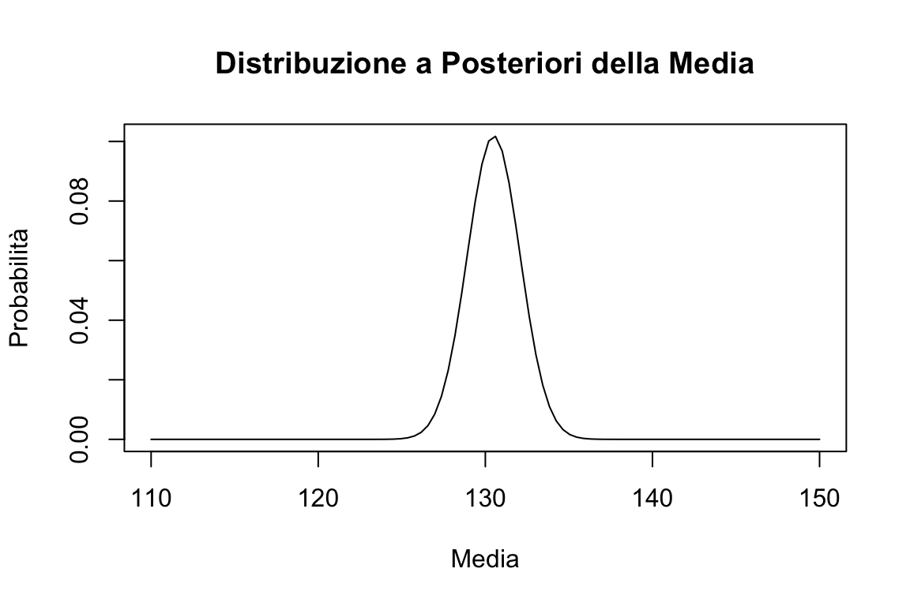
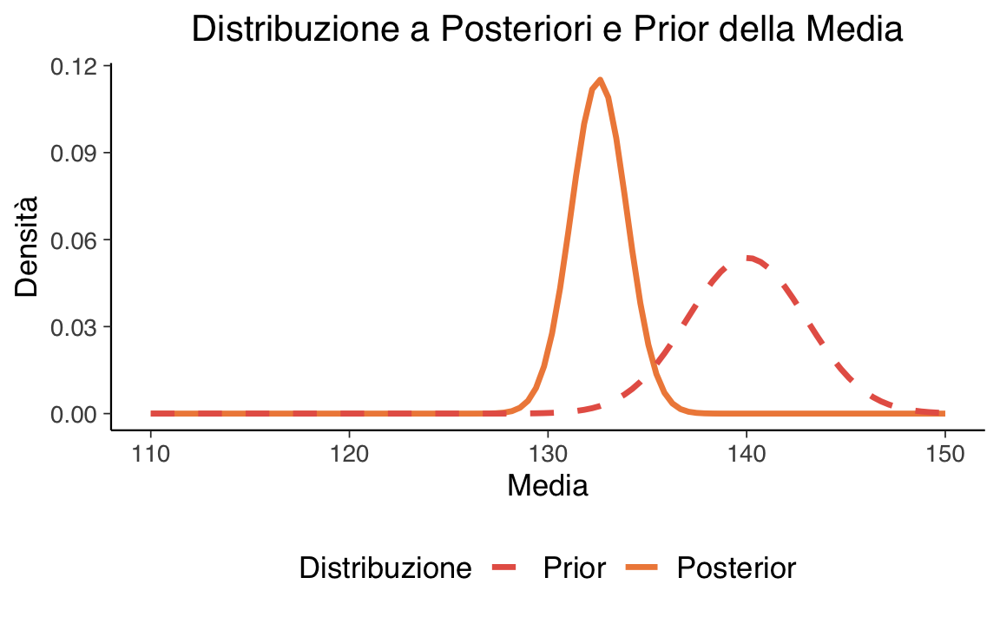
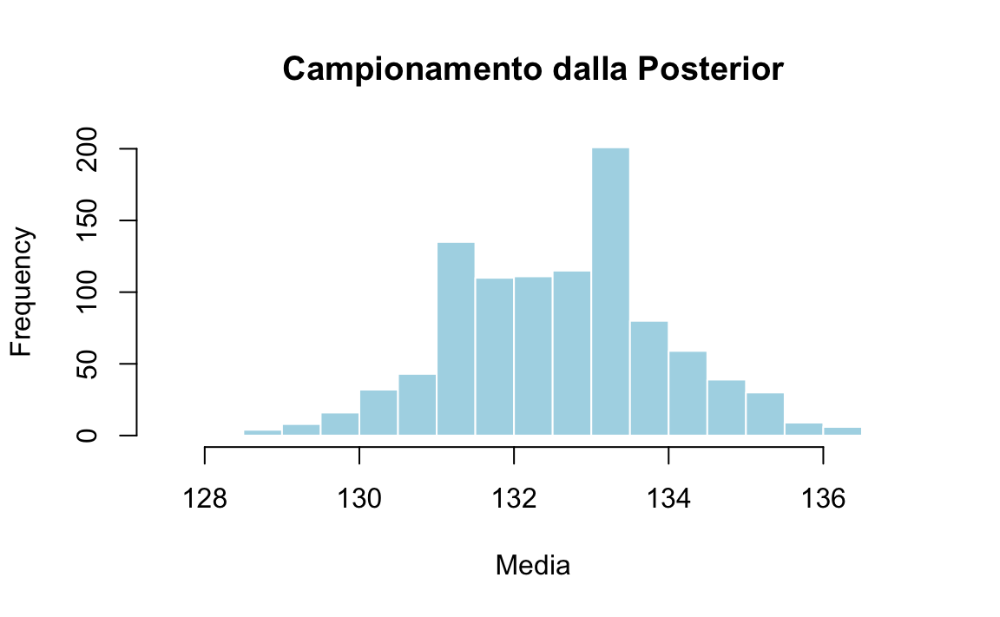
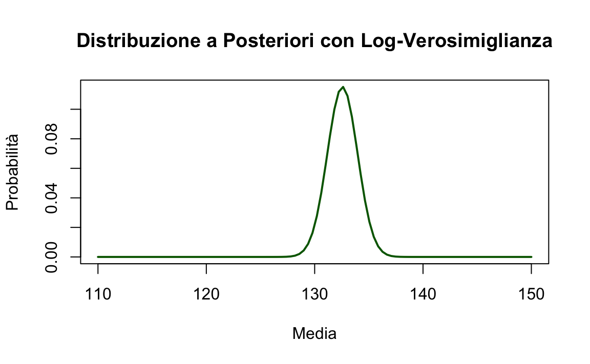
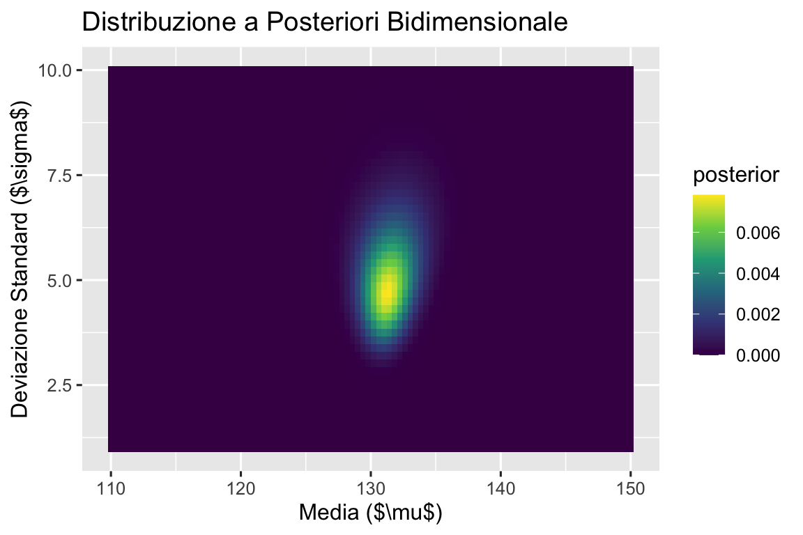

here::here("code", "_common.R") |>
source()
# Load packages
if (!requireNamespace("pacman")) install.packages("pacman")
pacman::p_load(reshape2, )
Your package installedWarning in pacman::p_load(reshape2, ): Failed to install/load:here::here("code", "_common.R") |>
source()
# Load packages
if (!requireNamespace("pacman")) install.packages("pacman")
pacman::p_load(reshape2, )
Your package installedWarning in pacman::p_load(reshape2, ): Failed to install/load:In questo capitolo, estenderemo la discussione precedente sul calcolo della distribuzione a posteriori utilizzando il metodo basato su griglia, applicandolo questa volta a un caso con verosimiglianza gaussiana. In particolare, ci concentreremo su come costruire un modello gaussiano per descrivere l’intelligenza.
Immaginiamo di condurre uno studio sulla plusdotazione, considerando l’approccio psicometrico. Secondo questo approccio, una persona è considerata plusdotata se ha un QI (Quoziente Intellettivo) di 130 o superiore (Robinson, Zigler, & Gallagher, 2000). Anche se l’uso di un QI di 130 come soglia è il criterio più comune, non è universalmente accettato. L’intelligenza nei bambini plusdotati non è solo superiore rispetto a quella dei loro pari, ma è qualitativamente diversa (Lubart & Zenasni, 2010). I bambini plusdotati tendono a mostrare caratteristiche come un vocabolario ampio, un linguaggio molto sviluppato, processi di ragionamento avanzati, eccellente memoria, vasti interessi, forte curiosità, empatia, capacità di leadership, abilità visive elevate, impegno in situazioni sfidanti e un forte senso di giustizia (Song & Porath, 2005).
Nella simulazione che seguirà, assumeremo che i dati provengano da una distribuzione normale. Per semplicità, considereremo che la deviazione standard sia nota e pari a 5. Il parametro della media sarà l’oggetto della nostra inferenza.
Supponiamo di avere un campione di 10 osservazioni. I dati saranno generati casualmente da una distribuzione normale con media 130 e deviazione standard 5.
set.seed(123) # Per la riproducibilità
vera_media <- 130 # Media vera
sigma_conosciuta <- 5 # Deviazione standard conosciuta
dimensione_campione <- 10 # Dimensione del campione
# Generare un campione
campione <- round(rnorm(n = dimensione_campione, mean = vera_media, sd = sigma_conosciuta))
campione
#> [1] 127 129 138 130 131 139 132 124 127 128Creiamo ora una griglia di 100 valori compresi tra 110 e 150.
mu_griglia <- seq(110, 150, length.out = 100)
mu_griglia
#> [1] 110 110 111 111 112 112 112 113 113 114 114 114 115 115 116 116 116
#> [18] 117 117 118 118 118 119 119 120 120 121 121 121 122 122 123 123 123
#> [35] 124 124 125 125 125 126 126 127 127 127 128 128 129 129 129 130 130
#> [52] 131 131 131 132 132 133 133 133 134 134 135 135 135 136 136 137 137
#> [69] 137 138 138 139 139 139 140 140 141 141 142 142 142 143 143 144 144
#> [86] 144 145 145 146 146 146 147 147 148 148 148 149 149 150 150Per ogni valore della griglia, calcoliamo la verosimiglianza complessiva come prodotto delle densità di probabilità.
likelihood <- sapply(mu_griglia, function(mu) {
prod(dnorm(campione, mean = mu, sd = sigma_conosciuta))
})
likelihood
#> [1] 5.29e-50 1.41e-48 3.50e-47 8.17e-46 1.79e-44 3.66e-43 7.02e-42
#> [8] 1.26e-40 2.12e-39 3.35e-38 4.94e-37 6.84e-36 8.87e-35 1.08e-33
#> [15] 1.23e-32 1.31e-31 1.30e-30 1.22e-29 1.07e-28 8.77e-28 6.74e-27
#> [22] 4.86e-26 3.28e-25 2.07e-24 1.23e-23 6.81e-23 3.54e-22 1.72e-21
#> [29] 7.85e-21 3.35e-20 1.34e-19 5.03e-19 1.77e-18 5.82e-18 1.79e-17
#> [36] 5.18e-17 1.40e-16 3.55e-16 8.42e-16 1.87e-15 3.90e-15 7.61e-15
#> [43] 1.39e-14 2.38e-14 3.82e-14 5.74e-14 8.08e-14 1.07e-13 1.32e-13
#> [50] 1.52e-13 1.65e-13 1.68e-13 1.60e-13 1.42e-13 1.19e-13 9.29e-14
#> [57] 6.81e-14 4.67e-14 3.01e-14 1.81e-14 1.02e-14 5.40e-15 2.67e-15
#> [64] 1.24e-15 5.39e-16 2.19e-16 8.37e-17 2.99e-17 1.00e-17 3.14e-18
#> [71] 9.22e-19 2.54e-19 6.54e-20 1.58e-20 3.57e-21 7.56e-22 1.50e-22
#> [78] 2.79e-23 4.86e-24 7.93e-25 1.21e-25 1.74e-26 2.33e-27 2.93e-28
#> [85] 3.45e-29 3.80e-30 3.93e-31 3.80e-32 3.45e-33 2.93e-34 2.33e-35
#> [92] 1.74e-36 1.21e-37 7.93e-39 4.86e-40 2.79e-41 1.50e-42 7.56e-44
#> [99] 3.57e-45 1.58e-46Impostiamo una prior uniforme e calcoliamo la distribuzione a posteriori normalizzata.
Visualizzazione:
plot(mu_griglia, posterior,
type = "l", main = "Distribuzione a Posteriori della Media",
xlab = "Media", ylab = "Probabilità"
)
Usiamo una prior gaussiana con media 140 e deviazione standard 3.
prior <- dnorm(mu_griglia, mean = 140, sd = 3)
posterior_non_norm <- likelihood * prior
posterior <- posterior_non_norm / sum(posterior_non_norm)
# Grafico
plot(mu_griglia, posterior,
type = "l", col = "blue", lwd = 2,
main = "Distribuzione a Posteriori e Prior della Media",
xlab = "Media", ylab = "Densità"
)
lines(mu_griglia, prior / sum(prior), col = "red", lty = 2)
legend("topright", legend = c("Posterior", "Prior"), col = c("blue", "red"), lty = c(1, 2))
Generiamo un campione dalla distribuzione a posteriori.
set.seed(123)
indice_campionato <- sample(1:length(mu_griglia), size = 1000, replace = TRUE, prob = posterior)
media_campionata <- mu_griglia[indice_campionato]
# Istogramma dei campioni
hist(media_campionata,
main = "Campionamento dalla Posterior", xlab = "Media",
breaks = 20, col = "lightblue", border = "white"
)
# Media e intervallo di credibilità
mean(media_campionata)
#> [1] 133
quantile(media_campionata, c(0.03, 0.97))
#> 3% 97%
#> 130 135
Utilizziamo i logaritmi per migliorare la stabilità numerica.
log_likelihood <- sapply(mu_griglia, function(mu) {
sum(dnorm(campione, mean = mu, sd = sigma_conosciuta, log = TRUE))
})
log_prior <- dnorm(mu_griglia, mean = 140, sd = 3, log = TRUE)
log_posterior_non_norm <- log_likelihood + log_prior
log_posterior <- log_posterior_non_norm - max(log_posterior_non_norm) # Stabilizzazione
posterior <- exp(log_posterior) / sum(exp(log_posterior))
# Grafico
plot(mu_griglia, posterior,
type = "l", col = "darkgreen", lwd = 2,
main = "Distribuzione a Posteriori con Log-Verosimiglianza",
xlab = "Media", ylab = "Probabilità"
)
Per una griglia bidimensionale di valori di \(\mu\) e \(\sigma\):
# Define the grid for mu and sigma
mu_griglia <- seq(110, 150, length.out = 100)
sigma_griglia <- seq(1, 10, length.out = 50)
# Create combinations of mu and sigma using expand.grid
grid <- expand.grid(mu = mu_griglia, sigma = sigma_griglia)
# Compute the log-likelihood for each combination of mu and sigma
log_likelihood <- apply(grid, 1, function(params) {
mu <- params[1]
sigma <- params[2]
sum(dnorm(campione, mean = mu, sd = sigma, log = TRUE))
})
# Reshape log-likelihood into a matrix
log_likelihood_2d <- matrix(log_likelihood, nrow = length(mu_griglia), ncol = length(sigma_griglia))
# Compute priors for mu and sigma
log_prior_mu <- dnorm(mu_griglia, mean = 140, sd = 5, log = TRUE)
log_prior_sigma <- dnorm(sigma_griglia, mean = 5, sd = 2, log = TRUE)
# Combine priors into a grid
log_prior_2d <- outer(log_prior_mu, log_prior_sigma, "+")
# Compute log-posterior
log_posterior_2d <- log_likelihood_2d + log_prior_2d
log_posterior_2d <- log_posterior_2d - max(log_posterior_2d) # Stabilize
posterior_2d <- exp(log_posterior_2d)
posterior_2d <- posterior_2d / sum(posterior_2d) # Normalize
# Convert posterior_2d to a data frame for visualization
library(reshape2)
posterior_df <- melt(posterior_2d)
names(posterior_df) <- c("mu_idx", "sigma_idx", "posterior")
posterior_df$mu <- mu_griglia[posterior_df$mu_idx]
posterior_df$sigma <- sigma_griglia[posterior_df$sigma_idx]
# Plot the posterior distribution
library(ggplot2)
ggplot(posterior_df, aes(x = mu, y = sigma, fill = posterior)) +
geom_tile() +
scale_fill_viridis_c() +
labs(
title = "Distribuzione a Posteriori Bidimensionale",
x = "Media ($\\mu$)", y = "Deviazione Standard ($\\sigma$)"
)
Quando si passa alla stima simultanea di più parametri, come la media (\(\mu\)) e la deviazione standard (\(\sigma\)), l’analisi diventa notevolmente più complessa. Questo perché occorre considerare un numero molto maggiore di combinazioni di parametri rispetto alla stima di un solo parametro, aumentando così il carico computazionale. Inoltre, la scelta delle priors per ciascun parametro richiede particolare attenzione, poiché queste influenzeranno in modo diretto le stime a posteriori.
In scenari dove lo spazio dei parametri è multidimensionale o quando l’esplorazione della griglia diventa impraticabile, l’uso di metodi avanzati come il campionamento di Markov Chain Monte Carlo (MCMC) diventa indispensabile. Questi metodi permettono di campionare in modo efficiente dalla distribuzione a posteriori, senza la necessità di esplorare esplicitamente ogni combinazione possibile di parametri, rendendo l’analisi più gestibile anche in contesti complessi.
In conclusione, l’estensione dell’approccio bayesiano a problemi con più parametri sconosciuti richiede un’attenzione ancora maggiore nella definizione dello spazio dei parametri, nella selezione delle priors appropriate e nel calcolo delle distribuzioni a posteriori. L’adozione di tecniche come l’MCMC può facilitare questo processo, permettendo di affrontare in modo efficiente problemi che altrimenti sarebbero proibitivi dal punto di vista computazionale.
sessionInfo()
#> R version 4.4.2 (2024-10-31)
#> Platform: aarch64-apple-darwin20
#> Running under: macOS Sequoia 15.2
#>
#> Matrix products: default
#> BLAS: /Library/Frameworks/R.framework/Versions/4.4-arm64/Resources/lib/libRblas.0.dylib
#> LAPACK: /Library/Frameworks/R.framework/Versions/4.4-arm64/Resources/lib/libRlapack.dylib; LAPACK version 3.12.0
#>
#> locale:
#> [1] C/UTF-8/C/C/C/C
#>
#> time zone: Europe/Rome
#> tzcode source: internal
#>
#> attached base packages:
#> [1] stats graphics grDevices utils datasets methods base
#>
#> other attached packages:
#> [1] reshape2_1.4.4 see_0.9.0 gridExtra_2.3 patchwork_1.3.0
#> [5] bayesplot_1.11.1 psych_2.4.12 scales_1.3.0 markdown_1.13
#> [9] knitr_1.49 lubridate_1.9.4 forcats_1.0.0 stringr_1.5.1
#> [13] dplyr_1.1.4 purrr_1.0.2 readr_2.1.5 tidyr_1.3.1
#> [17] tibble_3.2.1 ggplot2_3.5.1 tidyverse_2.0.0 rio_1.2.3
#> [21] here_1.0.1
#>
#> loaded via a namespace (and not attached):
#> [1] generics_0.1.3 stringi_1.8.4 lattice_0.22-6 hms_1.1.3
#> [5] digest_0.6.37 magrittr_2.0.3 evaluate_1.0.1 grid_4.4.2
#> [9] timechange_0.3.0 fastmap_1.2.0 plyr_1.8.9 rprojroot_2.0.4
#> [13] jsonlite_1.8.9 viridisLite_0.4.2 mnormt_2.1.1 cli_3.6.3
#> [17] rlang_1.1.4 munsell_0.5.1 withr_3.0.2 yaml_2.3.10
#> [21] tools_4.4.2 parallel_4.4.2 tzdb_0.4.0 colorspace_2.1-1
#> [25] pacman_0.5.1 vctrs_0.6.5 R6_2.5.1 lifecycle_1.0.4
#> [29] htmlwidgets_1.6.4 pkgconfig_2.0.3 pillar_1.10.0 gtable_0.3.6
#> [33] Rcpp_1.0.13-1 glue_1.8.0 xfun_0.49 tidyselect_1.2.1
#> [37] farver_2.1.2 htmltools_0.5.8.1 nlme_3.1-166 labeling_0.4.3
#> [41] rmarkdown_2.29 compiler_4.4.2